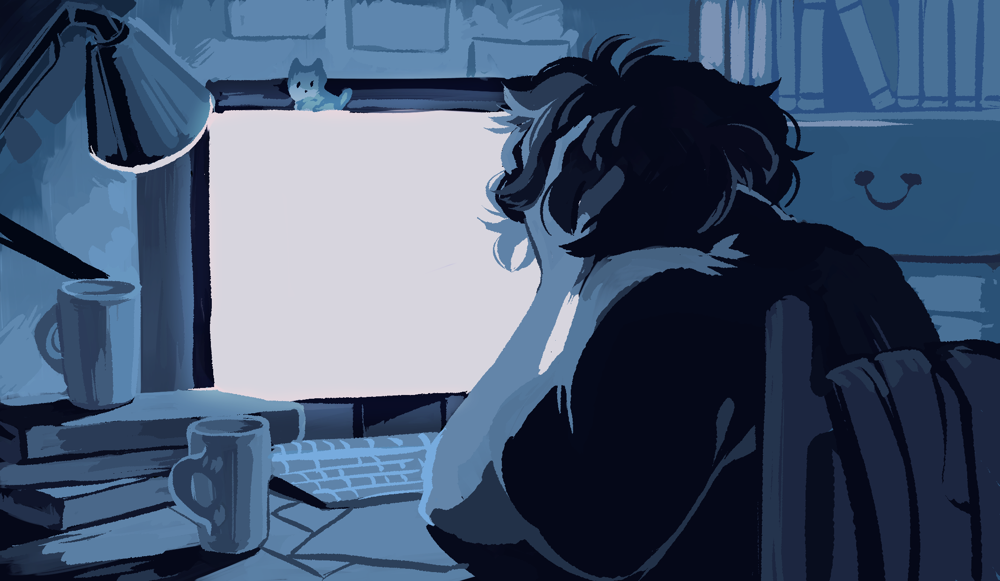

Новые сообщения
сегодня

Подробнее
Не думаю, что ты снова зайдешь в сеть.
Я буду писать, просто чтобы оставалось ощущение, будто мы разговариваем. Я даже не задумывался, что можно скучать по кому-то, если не разговаривать пару-тройку дней. Самые ужасные обстоятельства, чтоб наконец это понять. Сегодня на глаза попалась страница в инстаграме с пропавшими без вести. Вывешивают списки арестованных. Судорожно ищу твою фамилию. Впервые задумался о том, как было бы круто, если бы я не знал твоего настоящего имени.
Там было две девушки чем-то похожих на тебя. По 15 суток каждой. За что неизвестно. Никакой информации. Они были на митингах? Их случайно взяли? Понятия не имею. Видимо, остается только гадать, и на твой счет тоже. Там вывешивали в твиттере каких-то онлайн психологов. Да, я снова его скачал, не могу больше сидеть в изоляции. Психологи, которые вроде готовы помочь пережить стресс после… ареста. Если то, что я вижу в описаниях, можно назвать арестом. Если честно, больше похоже на пытки. Судорожно сохраняю каждый твит на всякий случай, вдруг ты зайдешь в сеть и тебе нужна будет… такая помощь. Какая-нибудь помощь. Что я могу? Я, блять, буквально в другой стране. Даже не знаю, что мог бы, будучи в той же. Караулить возле участков? Ходить с плакатом? Орать на представителей власти? Сесть рядом в камеру, чтобы воздуха оставалось еще меньше?
Говорят, списки фальсифицируют. Вряд ли один погибший. Люди пропадают без вести. Одна надежда – почти у всех стоит срок задержания 15 суток, они еще не прошли, может, все найдутся, и это просто страшилки.
Хотел бы сказать, что, мол, лишь бы ты вылезла и ответила, на остальное плевать, но я боюсь представить, что переживают другие люди. Чужие семьи. Что переживает твоя семья. Так и не смог достучаться ни до кого из них. Общие знакомые уехали из города подальше от всей этой дичи. Целый день то отхожу от компьютера посидеть, посмотреть в стену, то снова подхожу и обновляю страницы.
Мирные марши. Никто не хочет войны.
Лишь бы ты прочитала хоть что-нибудь, блядские 19:45.